01 / In the studio
Redirected Sessions
Conversations become collaborations. Singers, rappers, producers, and songwriters share their stories and leave a creative seed — a hook, a beat, a melody — to grow into a collective track across the season.

leonardo.soares@redirectedmusic.comMusic. Culture. Stories.
Redirected is an upcoming podcast and documentary project exploring the people shaping music and culture. Honest conversations, creative turning points, and the work you rarely get to see.
01 / In the studio
Conversations become collaborations. Singers, rappers, producers, and songwriters share their stories and leave a creative seed — a hook, a beat, a melody — to grow into a collective track across the season.
02 / Behind the scenes
Follow DJs, promoters, and event organizers beyond the spotlight. From travel and soundchecks to the moments before a set, discover the people and work that bring a scene to life.
The people behind it
Meet the artists and scene-builders of Redirected here as the project takes shape. Interested in being part of a future episode?
Get in touchListen